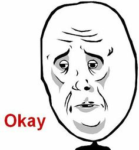

About Edgar de Jesus Endo Junior
I'm a Brazilian guy who likes to
code
games
.
I miss my fiancée Norma
My Classes This Quarter
CS401 - Modern Programming Practices
CS522 - Big Data
CS435 - Algorithms
CS472 - Web Application Programming
CS544 - Enterprise Architecture
My Favorite movies
Terminator 2: Judgment Day (
IMDB
)
Director
James Cameron
Genre
Action, Sci-Fi
Tagline
This time he's back...for good!
Plot outline
Over 10 years have passed since the first robot called The Terminator tried to kill Sarah Connor and her unborn son, John. The man who will become the future leader of the human resistance against the Machines is now a healthy young boy. (
more
)
Resident Evil (
IMDB
)
Bruce Almighty (
IMDB
)
Books
Digital Fortress
TV Shows
Dragon Ball Z (
IMDB
)
Naruto (
IMDB
)
One Punch Man (
IMDB
)
My Moods
Happy
Sad

Fun Facts About My Neighbors
Dalia: Likes to breath underwater but
forgets
that it hurts.
Hedra: Fell from a mountain riding a bike and
is still alive
.